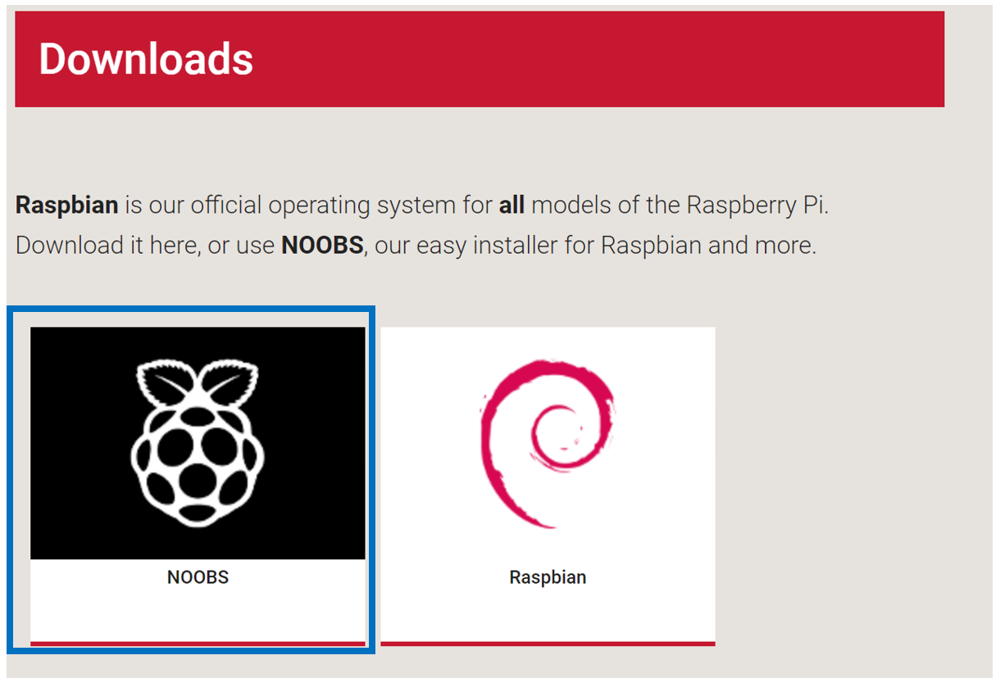

It is recommended that if you are uncomfortable with installing an operating system or do not already have an MicroSD card, that you purchase a MicroSD card with the ‘NOOBS’ software pre-installed.
Before installing the operating system, you will need to make sure that your MicroSD is properly formatted.
Using Windows Explorer
1. Right click on the MicroSD card select format
2. Select the format FAT and select ‘Start’
Below are instructions on how to install the Raspbian operating system using the NOOBS package installer that is available from the Raspberry Pi Website
1. Select the NOOBS software
2. On the following page, select ‘Download Zip’
3. Extract the files to the MicroSD card. Make sure the files are not in a subfolder. When you go into the SD card, the directory should look something like this:
4. Safely remove the MicroSD card and put it in the MicroSD card slot on the Raspberry Pi. (Refer to Hardware Configuration for help) Start the Pi and it should boot from the SD card and land on the menu shown below. Select ‘Raspbian’ and click install. It will bring up a warning, click ‘ok’ na dgive time to install

5. Finally, The desktop will load where it will welcome you, this process will allow you to change time zone and set up a user account with credentials